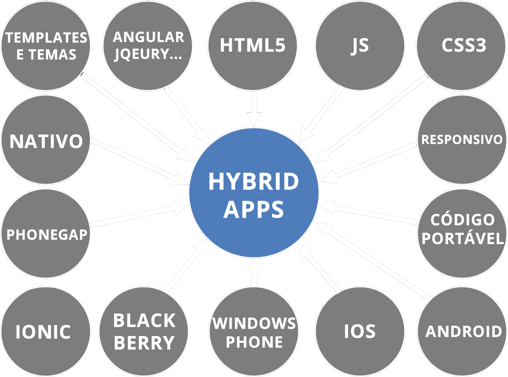
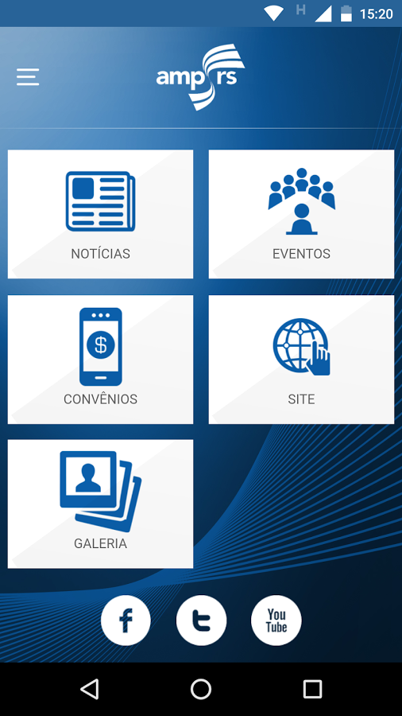
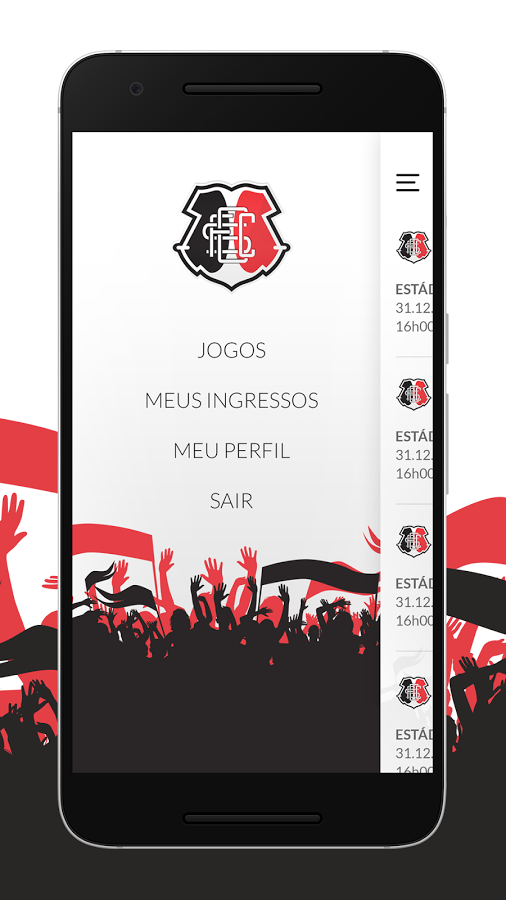
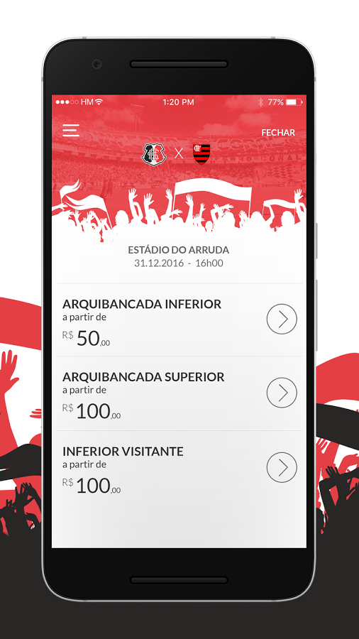
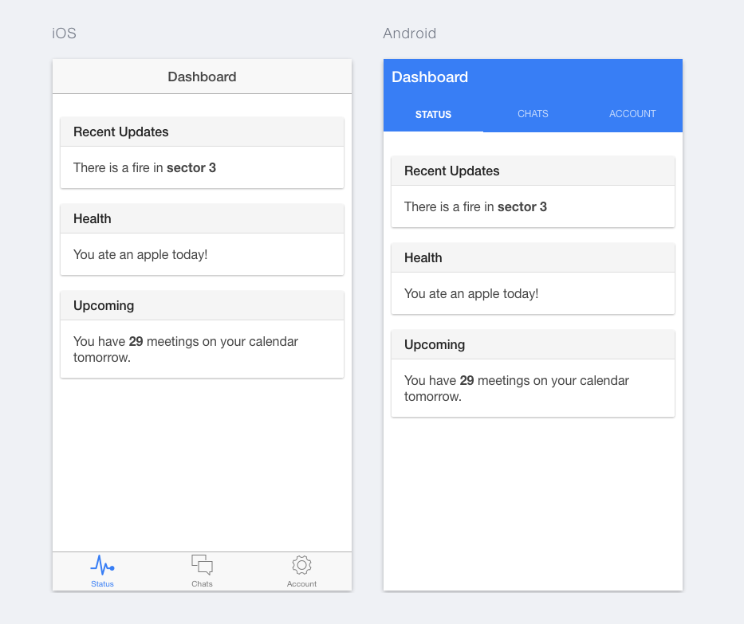

Uma aplicação híbrida é um aplicativo nativo construído com habilidades de desenvolvimento web: HTML5, CSS, JavaScript, que são empacotados no build dentro de um app nativo. O aplicativo nativo contém um navegador (WebView) que está ligado as arquivos HTML. Usando Cordova, Ionic, PhoneGap, ou outras soluções semelhantes, é possível - e até mesmo muito fácil - empacotar este código HTML com código nativo, e isso possibilita submeter o APP às lojas.

 
NodeJS
Android SDK / XCode
Bower (recomendado)
$ npm install -g cordova ionic$ ionic start appName tabs$ cd appName/hooks
scss
-- ionic.app.scss
www
-- css
-- img
-- js
----> app.js
----> controllers.js
----> services.js
-- lib
-- templates
----> friend-detail.html
----> tab-account.html
----> tab-dash.html
----> tab-friends.html
----> tabs.html
-- index.html
$ ionic platform add browser$ ionic platform add android$ ionic platform add ios$ cordova plugin add cordova-plugin-inappbrowser --save$ bower install ngCordova --save$ ionic serve$ ionic build android$ ionic run androidÉ WEB!
Debug no browser
1 dev, várias plataformas
Quase tudo funciona bem
Menor custo
É nativo, sim! SQN
Não é nativo!
Você desenvolver para Safari
Baixa performance
Alto consumo de bateria
Animações são travadas
Limitações da implementação dos Plugins
Você está criando um novo Facebook?
É um jogo?
Tem pouca grana?
Tem pressa?
Quer encontrar mão de obra facilmente?
HTML Hybrid Apps
Ernani Ely Jr. / softdesign.com.br